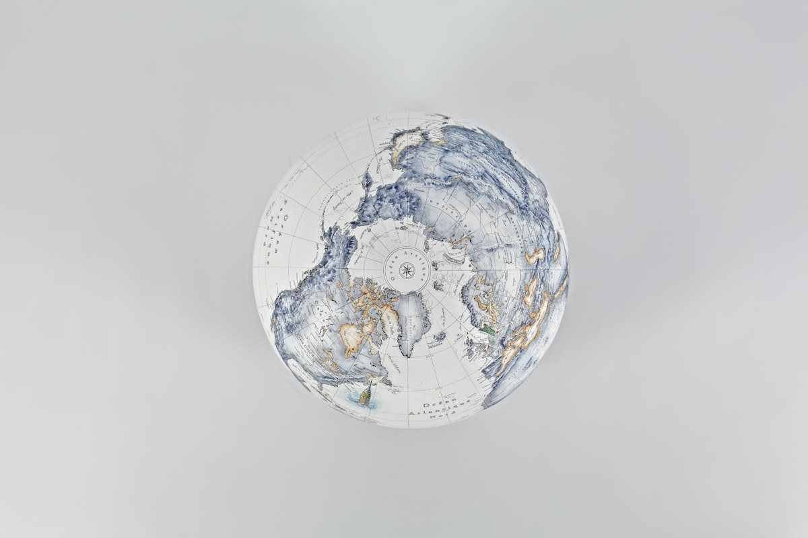
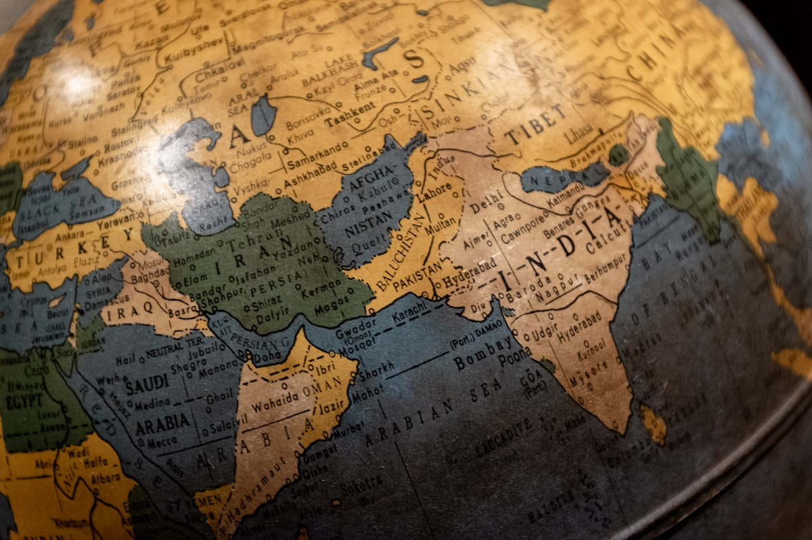

Discover original collectible cartography from the 15th to 19th century.
Explore CollectionEvery piece is vetted by our experts and comes with a signed certificate of authenticity unconditionally guaranteeing its origin.
We source only the finest examples of early cartography from around the world, focusing on rarity, condition, and historical importance.
Your investments are packed actively with museum-quality materials and shipped fully insured globally with reliable couriers.

A stunning example of Mercator's projection displaying the known world in the late 17th century.

A classic map of the Asian continent featuring intricate cartouches and early geographical details.
Showcasing the Indian subcontinent under early colonial influence, noting primary trade routes.
Beyond their striking aesthetic appeal, historical cartography represents a unique intersection of art, history, and investment potential.
Own a tangible piece of history. Maps document humanity's evolving understanding of the world, capturing borders, empires, and discoveries frozen in time.
From elaborate cartouches to intricate hand-coloring and calligraphy, antique maps are magnificent works of art that elevate any room, study, or gallery.
As rare artifacts become scarcer, pristine museum-grade maps from renowned cartographers have demonstrated steady, reliable appreciation over decades.
During the 17th century, the Dutch Republic dominated global trade, navigation, and mapmaking. Cartographers like Joan Blaeu and Gerardus Mercator produced works of unprecedented accuracy and beauty.
Our chief curator recently acquired a pristine, hand-colored edition of Blaeu's Atlas Maior. It stands as a testament to an era where art and science merged to map a rapidly expanding world. We invite you to explore the intricate details of these masterpieces.
Explore the Dutch CollectionJoin our exclusive community of map collectors. Choose a plan that fits your passion for historical cartography.
Perfect for beginners and enthusiasts looking to explore our digital archives.
For serious collectors wanting high-quality downloads and member perks.
The ultimate experience with VIP access to the rarest museum-grade pieces.
Trusted by historians, museums, and private collectors worldwide.
"The 16th-century Ortelius map I purchased exceeded my expectations. The certification process was entirely transparent, and the shipping was impeccably secure."
"Finding an authentic 18th-century map of our region was a six-month hunt handled brilliantly by their sourcing team. The museum-quality framing was the perfect finishing touch."
"The 'Valuable' membership tier has been absolutely worth it. The early access let me grab a Blaeu map I'd been seeking for years before it hit the public catalog."
Join our exclusive community of map collectors today and get access to the world's most beautiful historical cartography.
Get Started